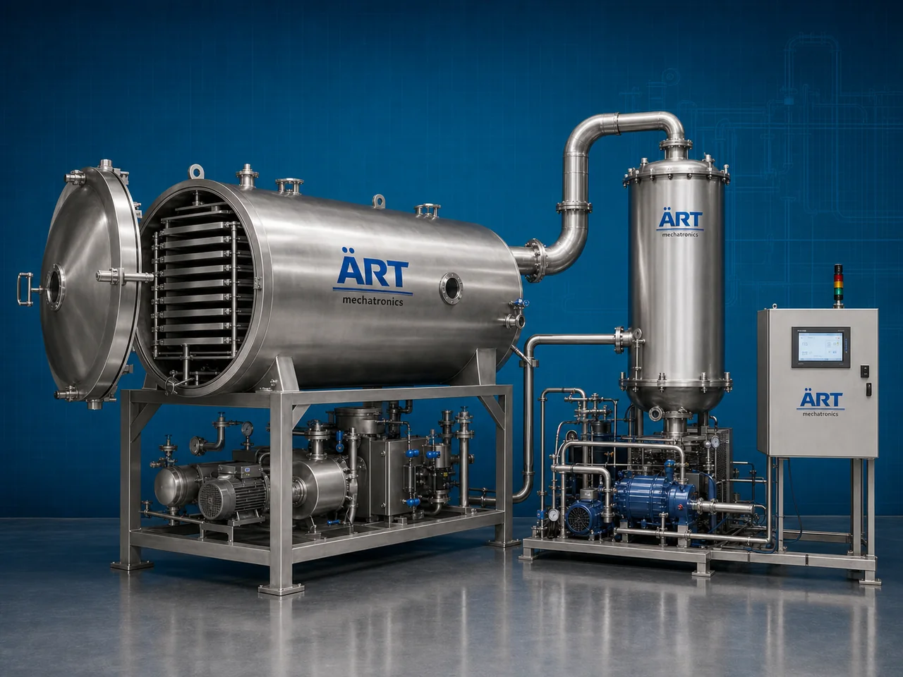

Freeze Dryer Machine (Industrial Freeze Drying & Lyophilization System)
A Freeze Dryer Machine, also known as a Lyophilizer, Freeze Drying Machine, Vacuum Freeze Dryer, or Industrial Lyophilization System, is an advanced industrial processing solution designed for moisture removal, dehydration, preservation, shelf-life enhancement, nutrient retention, and high-efficiency drying operations for fruits, vegetables, coffee, herbs, dairy products, pharmaceuticals, nutraceuticals, seafood alternatives, ready-to-eat foods, and sensitive industrial materials.

About the Freeze Dryer
Freeze drying systems are widely used for:
- Fruit freeze drying operations
- Vegetable dehydration
- Instant coffee processing
- Pharmaceutical lyophilization
- Herbal and botanical preservation
- Dairy and nutraceutical drying
- Ready-to-eat food preservation
- High-value food processing applications
The machine improves:
- Product shelf life
- Nutritional retention
- Product texture and quality
- Moisture reduction efficiency
- Product stability
- Industrial hygiene standards
- Processing productivity
Industrial freeze dryer machines use:
- Deep freezing systems
- Vacuum sublimation technology
- Condenser and refrigeration systems
- PLC and HMI automation controls
- Stainless steel hygienic chambers
to remove moisture from products through sublimation while preserving shape, color, aroma, taste, and nutritional value with superior efficiency and high production consistency.
Freeze dryer machines are widely used in industries such as:
Food processing industries Fruit and vegetable industries Pharmaceutical industries Nutraceutical industries Coffee industries Dairy industries Herbal industries Biotechnology industries
where premium product preservation, long shelf life, and high-value processing are essential.
The machine is highly suitable for:
- Freeze dried fruit production
- Vegetable preservation operations
- Instant coffee manufacturing
- Pharmaceutical drying systems
- Herbal and nutraceutical processing
- Industrial food preservation systems
ART Mechatronics offers high-performance freeze dryer machines, engineered for continuous industrial operation, hygienic processing, precision moisture removal, and reliable long-term industrial productivity.
Working Principle of Freeze Dryer Machine
- 1. Product Loading & Freezing Process Products are loaded into freeze drying chamber and rapidly frozen at ultra-low temperatures.
- 2. Vacuum Creation & Sublimation Process Machine creates a high vacuum environment where frozen moisture directly converts into vapor without becoming liquid.
Advanced sublimation technology ensures gentle drying and superior product preservation.
- 3. Freeze Drying & Moisture Removal Operation Machine handles processing of: ✔ Fruits ✔ Vegetables ✔ Coffee ✔ Herbs ✔ Dairy products ✔ Nutraceuticals ✔ Pharmaceutical materials ✔ Industrial food products
accurately and continuously.
- 4. Condensation & Moisture Collection Process Machine performs: Moisture extraction Vacuum drying Low-temperature dehydration Product preservation Water vapor condensation Shelf-life enhancement
for efficient industrial drying and preservation operations.
- 5. Intelligent Automation & Hygiene Integration Optional systems include: Automatic vacuum control systems Refrigeration systems Data logging systems CIP cleaning systems Food-grade stainless steel construction
- 6. Finished Product Discharge Processed freeze-dried products discharged automatically for: Packaging operations Vacuum packing systems Storage operations Export shipment handling Retail and industrial distribution
Types of Freeze Dryer Machines
- 1. Food Freeze Dryer Machine Designed for: ✔ Fruit, vegetable, and ready-to-eat food processing applications
- 2. Pharmaceutical Freeze Dryer Machine Suitable for: ✔ Medicine and biotechnology drying systems
- 3. Coffee Freeze Dryer Machine Uses: ✔ Instant coffee manufacturing operations
- 4. Laboratory Freeze Dryer Machine Designed for: ✔ Research and pilot-scale freeze drying systems
- 5. Vacuum Freeze Dryer Machine Suitable for: ✔ Precision industrial moisture removal operations
- 6. Fully Automatic Industrial Freeze Drying System Designed for: ✔ Complete industrial food and pharmaceutical automation lines
Industries Using Freeze Dryer Machines
🍓 Food Processing Industry Freeze dried fruits, vegetables, snacks, and ready-to-eat food systems. ☕ Coffee Industry Instant coffee manufacturing and aroma preservation systems. 💊 Pharmaceutical Industry Medicine drying, vaccine preservation, and biotech processing systems. 🌿 Nutraceutical & Herbal Industry Herbal extract drying and botanical preservation operations. 🥛 Dairy Industry Freeze dried dairy products and nutritional ingredient processing systems. 🛒 FMCG Food Industry Premium preserved foods and long shelf-life product manufacturing systems.
Features & Advantages
- High-efficiency freeze drying operation
- Superior nutritional and flavor retention
- Hygienic stainless steel industrial construction
- PLC and automation control systems
- Improves shelf life and product stability
- Preserves product texture, aroma, and color
- Supports multiple food, herbal, and pharmaceutical products
- Reliable long-term industrial performance
- Smooth integration with industrial food production lines
Technical Highlights
Machine Type: Freeze dryer machine Industrial lyophilization system Vacuum freeze drying machine Material Compatibility: Fruits Vegetables Coffee Herbs Dairy products Pharmaceutical materials Nutraceutical products Integration: Vacuum systems Refrigeration systems Condenser systems Automatic control systems Features: PLC control system Touchscreen HMI Stainless steel construction Low-temperature drying systems Data monitoring systems Applications: Freeze drying Moisture removal Food preservation Pharmaceutical drying Vacuum dehydration Shelf-life enhancement Automation: Semi-automatic Fully automatic industrial systems
Turnkey Freeze Drying Solutions
ART Mechatronics offers: Complete freeze drying systems Automatic lyophilization solutions Industrial food preservation systems Vacuum and refrigeration integration systems Installation & commissioning After-sales service & AMC
Why Choose Art Mechatronics
Expertise in industrial food and pharmaceutical processing systems Customized freeze drying solutions for multiple industries High-performance and hygienic drying technology Advanced PLC and automation systems Proven industrial preservation performance across sectors
Applications
Food Processing Plants Fruit & Vegetable Processing Facilities Coffee Manufacturing Units Pharmaceutical Industries Nutraceutical Processing Plants Industrial Food Processing Industries
Related Process Equipment machines
Get pricing & specs for the Freeze Dryer
Share the product, target capacity, current process and plant location. These details help our engineers discuss the right machine or line configuration.
One partner, from design to start-up
ART Mechatronics designs, manufactures, installs and commissions your Freeze Dryer solution with regional presence in India, UAE and Thailand.